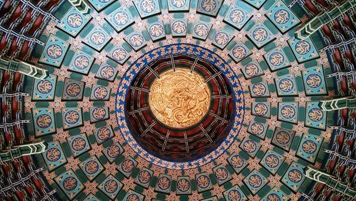
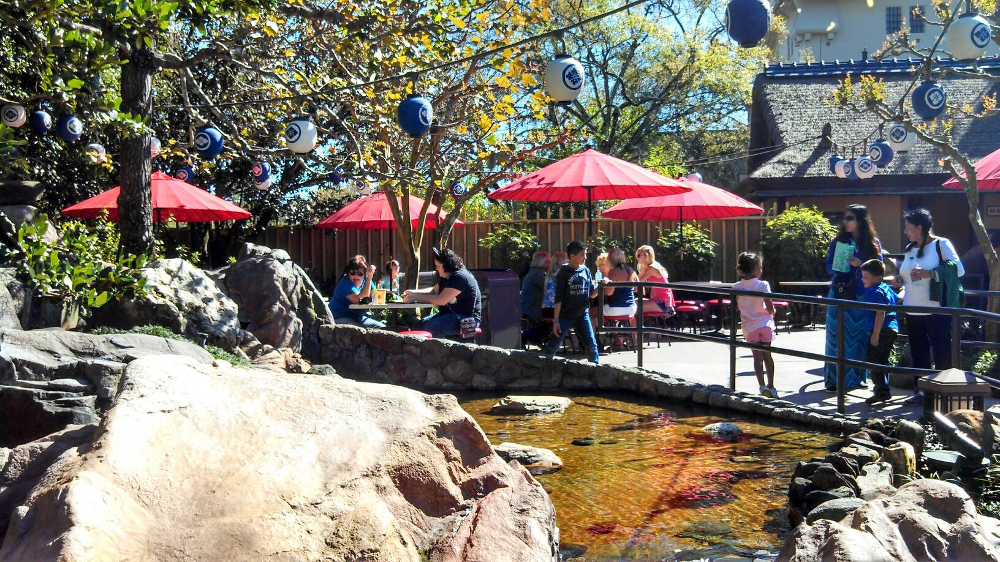
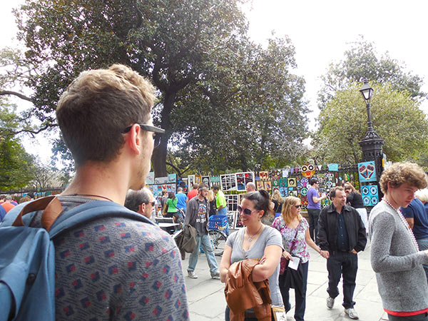
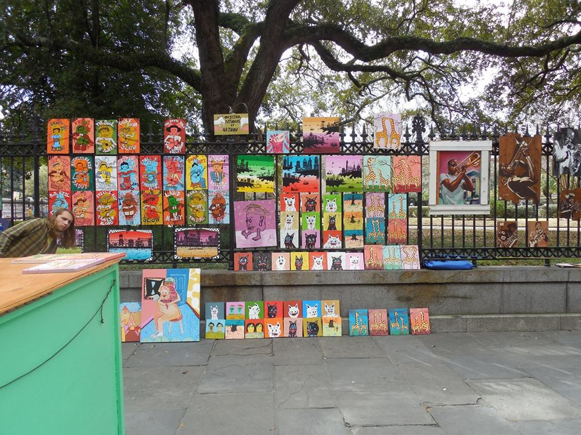
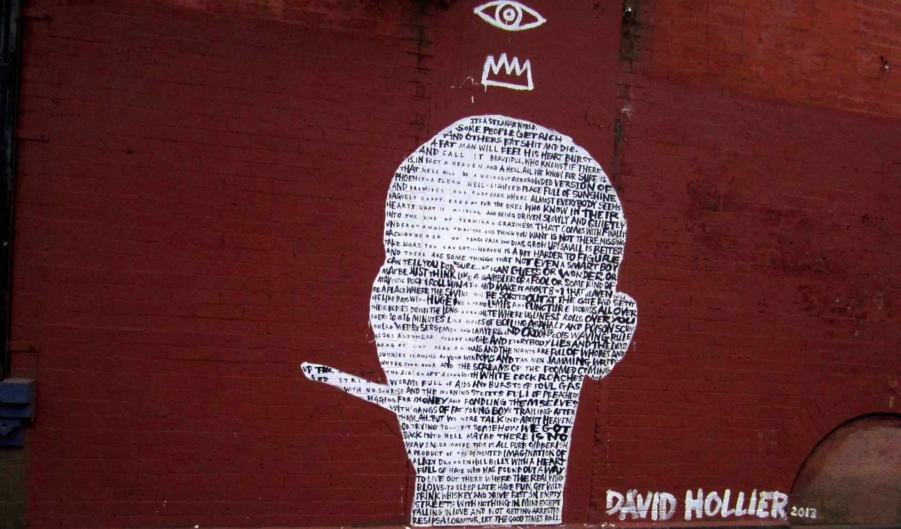
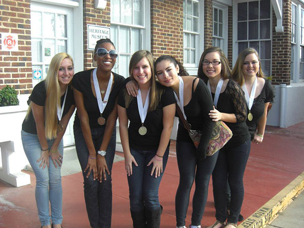
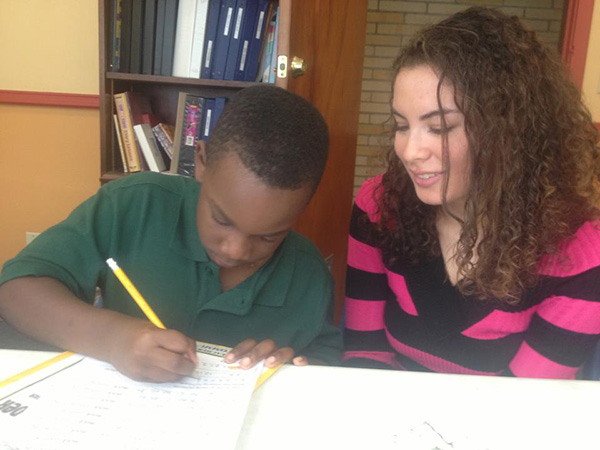

|  |  |  | |
|  |
|
|
 |
captionnnnnnn
Welcome to my site.
The time of having content on only one medium is coming to a close.
|  |  |
 |
I look back on those times almost with nostalgia. The Internet was only good for chatrooms; the only way to listen to the radio was through AM and FM; people actually watched TV together in a living room before 'Netflixing' became a verb, much less a word.
Now, however, I embrace what is now known as the "media convergance." As a student in the college of journalism and communications at the University of Florida, I'm becoming more exposed to this world of multimedia. And what a fascinating world it is.
On this site, you will find my professional interests and how they expand to all areas of multimedia. The content being produced today is among the most innovative in the history of communications. I'm proud to say that I'm a part of this diverse, ever-expanding field.
From my travels across the country, my dedication to service and mission work, and my exploration of multimedia storytelling, I have found a niche for myself. I've realized that combining my interests is not just a possibility; when done right, it can yield stories that have the substance and power to effect change in the world.
Am I at that point? Not yet. But I'm getting there. Every day, I'm exposed to people and ideas who inspire me to push myself personally and professionally.
I hope that you can see the influence of these great inspirations throughout my work that is posted on this website.